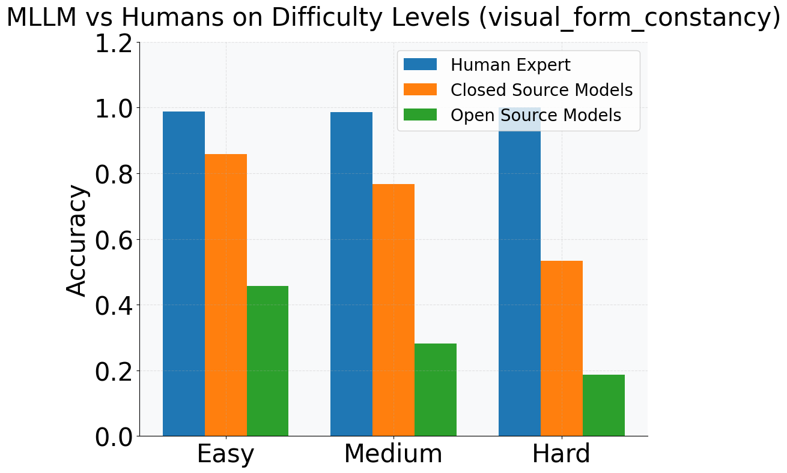
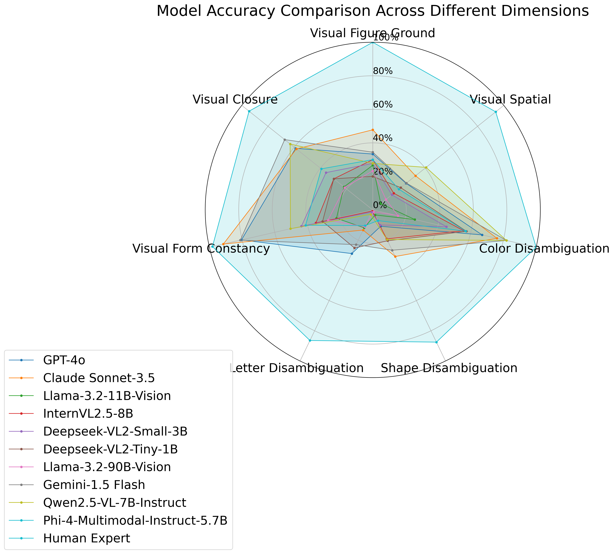
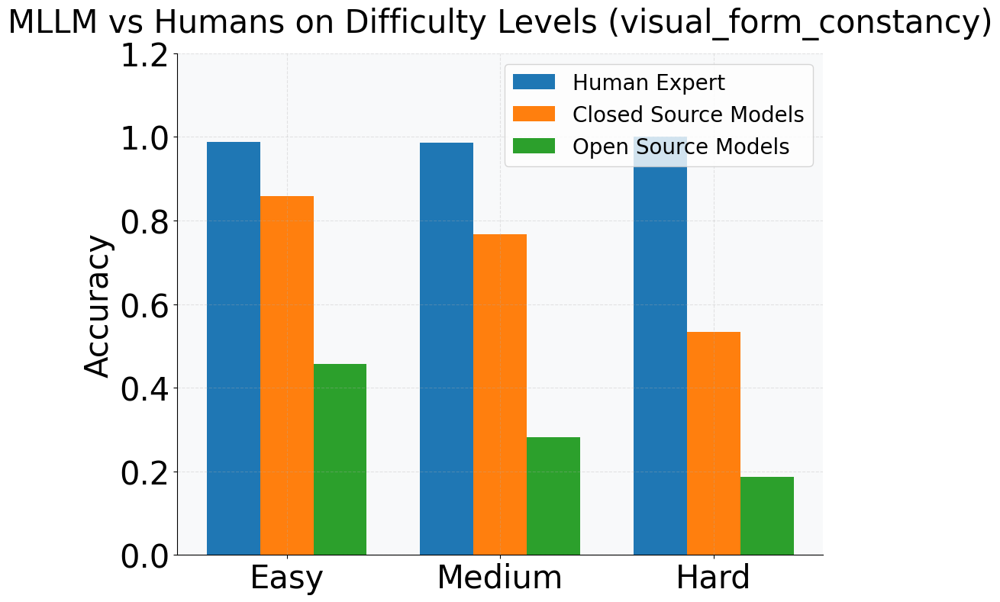
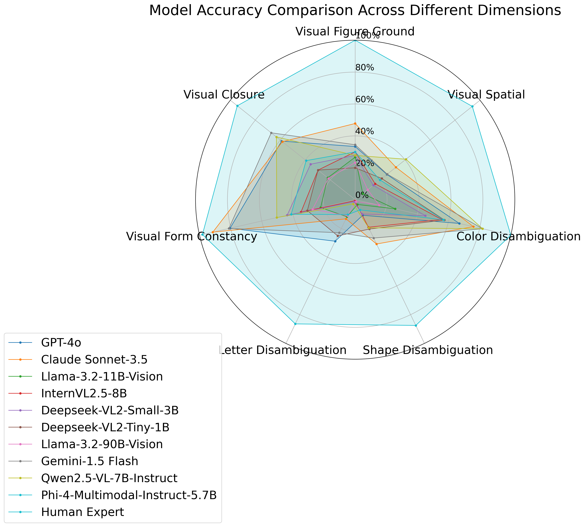

We created a joint perception-reasoning dataset from 150 logic-based IQ questions to investigate whether correct reasoning implies correct perception. Our findings reveal a significant disconnect:
- MLLMs often answer reasoning questions correctly while failing the corresponding perception questions that test their understanding of critical visual details.
- Visual perception errors are common in the reasoning chains of MLLMs, even when the final answer is correct.
Our preliminary study on one leading MLLM revealed that for 29.0% of its correct answers to reasoning questions, the model still made visual perception errors. This highlights that final-answer accuracy can obscure critical perceptual shortcomings.
Do You See Me is grounded in established human psychology frameworks, which categorize visual perception into five core abilities: visual discrimination, figure-ground perception, spatial relations, closure, and memory. Our benchmark adapts these principles to systematically evaluate MLLMs across 1,758 images and 2,612 questions.
The benchmark evaluates MLLMs on seven subtasks designed to mirror these core human skills:
- Shape Discrimination: Counting specific shapes in a cluttered image.
- Joint Shape-Color Discrimination: Counting shapes of specific colors.
- Letter Disambiguation: Recognizing textual characters.
- Visual Form Constancy: Recognizing a pattern after geometric transformations.
- Visual Spatial: Understanding object positions and spatial relationships.
- Visual Figure-Ground: Distinguishing a target pattern from background noise.
- Visual Closure: Matching incomplete shapes with their complete forms.
Our fully synthetic and programmatic benchmark allows for fine-grained control over task difficulty, enabling a rigorous analysis of MLLM capabilities.
 


